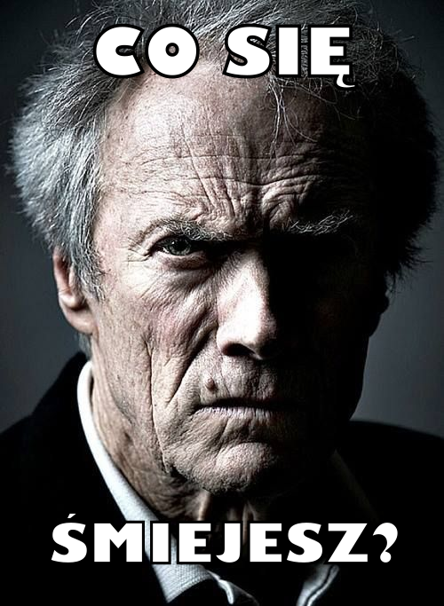

Jesteś odważny? Zaraz wkroczysz do świata, w którym nic nie jest takie jak się wydaje. Wszystko czego doświadczysz, zostanie z tobą do końca życia. To nie jest miejsce dla cieplutkich kluseczek, wprost z talerza Magdy Gessler! Tu nie ma miękkiej gry! To miejsce dla ludzi z mocną psychiką!
Pewnie sobie pomyślisz E tam! Pewnie to są jakieś jajca! Otóż nie! Amerykańscy naukowcy udowodnili, że Janusz - The Game zmienił życie ponad 90% ludzi na świecie! Pozostałe 10% jeszcze w niego nie zagrało. Sam widzisz, że sprawa jest bardzo poważna więc przestań się uśmiechać, bo nie ma w tym nic zabawnego!
Co? Zostałeś? A więc nie boisz się przejść na drugą stronę? Dobrze! Nie ma co sztucznie przedłużać! W tym właśnie momencie twoje życie ulegnie niesamowitej transformacji. Wejdziesz do świata w którym wszystko w co wierzysz ulegnie zmianie! Przewartościujesz swoje życie a ten stary spleśniały jogurt który trzymasz w lodówce od początku pandemii odzyska ważność!